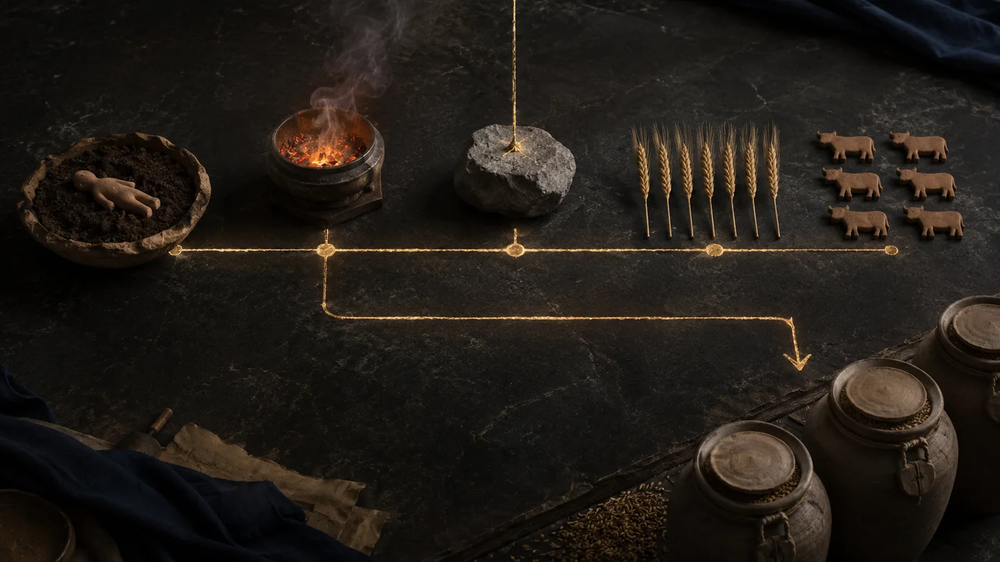
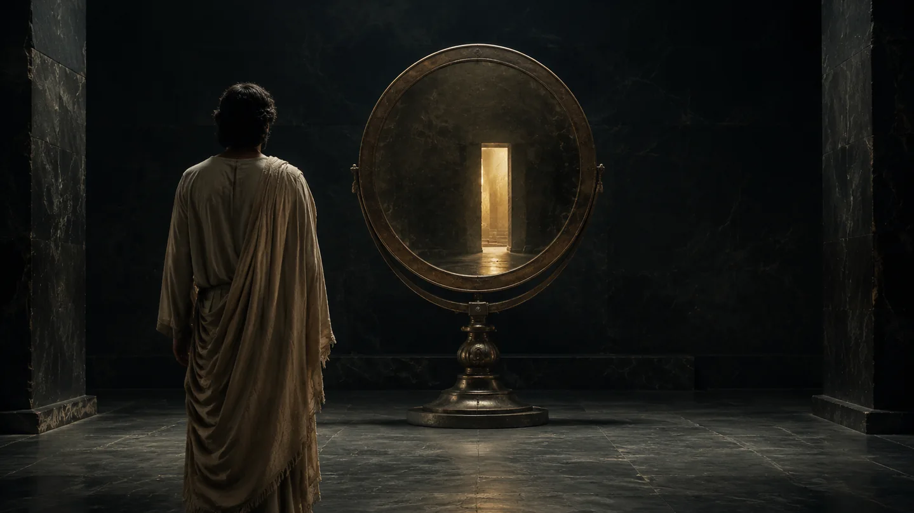
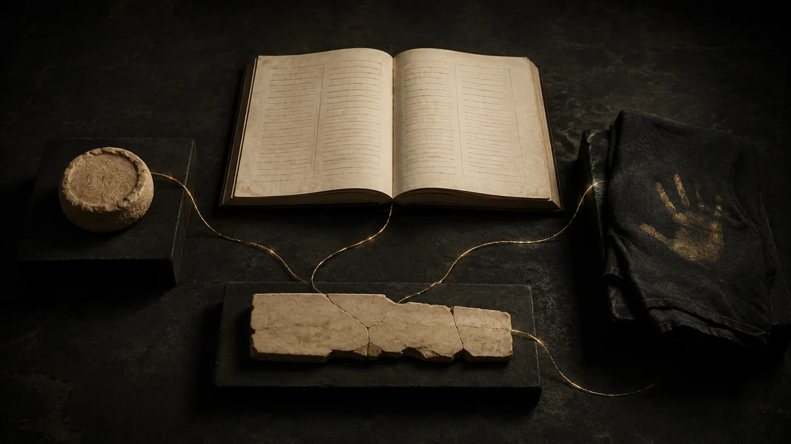
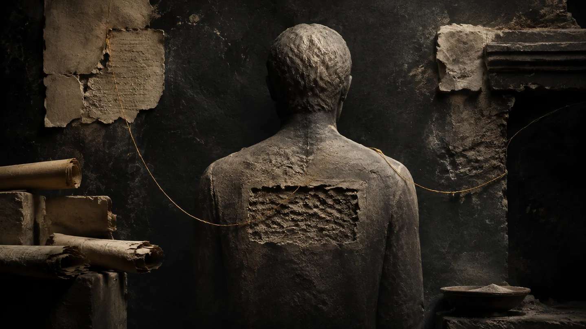

La Grande Bibliothèque
du Sacré.
Des manuscrits aux traditions, des paroles anciennes aux questions d’aujourd’hui.
Une bibliothèque de lecture, d'enquête et de transmission. Les sources et les hypothèses conservent leur statut propre.
 ÉCRITURES · TRACES · MÉMOIRE
ÉCRITURES · TRACES · MÉMOIRELes dix grandes collections.
Chaque rayon ouvre sa collection et les dossiers qui lui sont associés.
 01
01Jésus enfant & alphabets
Récits d’enfance, maîtres, Alpha, Aleph et écrits anciens.
Explorer la collection ↗02Paroles & paraboles
Évangiles, paroles, paraboles et approches de lecture.
Explorer la collection ↗ 03
03Marie & les femmes
Marie, Madeleine et les voix féminines des traditions.
Explorer la collection ↗
04Anges & mondes célestes
Michel, Gabriel et les récits des mondes célestes.
Explorer la collection ↗ 05
05Qumrân
Fragments, textes araméens et manuscrits de la mer Morte.
Explorer la collection ↗ 06
06Passion & apôtres
Récits de la Passion, apôtres, transmission et témoignages.
Explorer la collection ↗
07Apocalypses & au-delà
Visions anciennes, révélations et figures de l’au-delà.
Explorer la collection ↗ 08
08Nag Hammadi
Codices coptes, écrits apocryphes et critique textuelle.
Explorer la collection ↗
09Témoins historiques
Auteurs antiques, sources historiques et traditions.
Explorer la collection ↗
10Transmission des textes
Langues, variantes, canons et histoire du livre.
Explorer la collection ↗Les enquêtes illustrées.
Six portes d’entrée vers les recherches ELOAH.
L’Alpha et l’Aleph
Jésus enfant et la transmission des lettres.
Lire l’enquête ↗Les Paroles de Michel
4Q529 : fragments araméens et visions célestes.
Lire l’enquête ↗Marie-Madeleine et le sept
Évangiles, traditions et interprétations du chiffre sept.
Lire l’enquête ↗Le Livre secret de Jacques
La transmission d’un codex ancien et ses lacunes.
Lire l’enquête ↗
Bible et Coran
Étudier les commencements dans deux traditions.
Lire l’enquête ↗
Archives intégrales
Sources retrouvées, études reconstruites et dossiers conservés.
Lire l’enquête ↗Atlas des apocryphes
Notices documentaires et études disponibles — ce ne sont pas 600 traductions complètes.
Paraboles · Le laboratoire
Parcours d’analyse des récits et de leurs interprétations.
Explorer tous les dossiers.
Recherche par titre, sujet ou collection, sans perdre les anciens fichiers.
Les ouvrages
89 dossiers référencés
Aucun dossier trouvé. Essaie un mot différent ou choisis une autre catégorie.